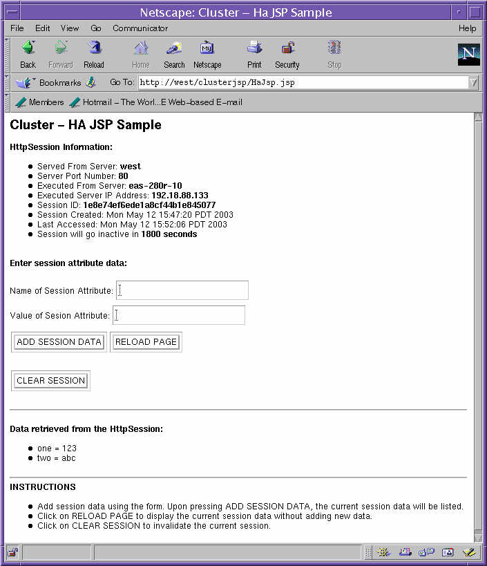

| Sun Java System Application Server |
The cluster JSP sample application demonstrates how a request to a JSP is shared or load balanced between all server instances in a cluster, with the HttpSession or "shopping cart" information surviving an abnormal condition in any server in a cluster. Simulated outages will demonstrate both failover and high availability. The Load Balancer will distribute requests to all instances in the cluster. It has the ability to forward a request to a healthy instance if it detects that the target instance is unavailable.
The general instructions for building, deploying, and running sample applications are provided in Building, Deploying, and Running Sample Applications. In reading this document, use the following application-specific variables for this application:
install_dir is the directory where
Application Server is installed. app_dir is the application base directory: install_dir/samples/quickstart/clusterjsp.
clusterjsp.ear.
Follow this general procedure:
install_dir/samples/quickstart/clusterjsp/clusterjsp.ear.
asant deploy uses
samples/common.properties which has your Application Server host name,
administration port, administration user and password and cluster
name. After you have built and deployed the application, run it by entering the following URL in your web browser:
http://ws-host:ws-port/clusterJSP
Where ws-host is the hostname of web server with the load balancer plugin and ws-port is the port one which the web server is running. Then, follow these instructions to use the application to demonstrate clustering:
The images from running the application:

For instructions no how to stop and cleanup an clusters and
nodeagents,
see Stop and
Cleanup cluster settings.
Copyright © 2005 Sun Microsystems, Inc. All rights reserved.